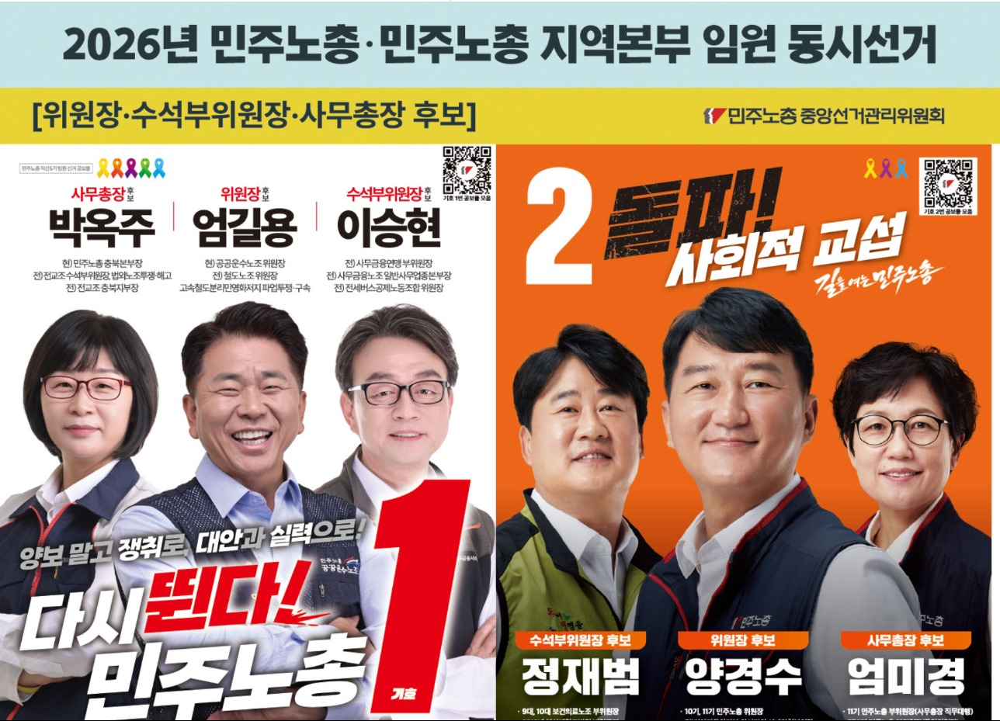

[노동] 민주노총 결선 열쇠 17만표, 진보당·정의당 계열 네 정파
양경수 36.18%·엄길용 31.67% 결선
탈락 3·4번 17만332표, 1·2위 표차의 약 6배
인천본부도 나은주 조 찬반 결선
AI경제저널=김갑봉 기자 | 민주노총 중앙선거관리위원회(중앙선관위)가 26일 2026년 임원 선거 투표 결과를 공고했다. 직선 5기 선거에서 과반을 얻은 후보조는 없었다. 기호 2번 양경수 후보조와 기호 1번 엄길용 후보조가 오는 12월 6일부터 10일까지 결선을 치른다.
1차 결과에는 현 집행부를 낸 진보당 진영의 분열이 드러났다. 2023년 56.61%로 재선한 양 위원장은 이번에 36.18%를 얻었고, 같은 진영에서 갈라진 3번 김민영 후보조가 14.38%를 가져갔다.
결선 열쇠는 탈락한 3·4번 표다. 김·최 두 후보와 엄 후보는 합동토론회에서 모두 양 후보를 자신과 가장 먼 후보로 꼽았다.
두 후보조는 경제사회노동위원회(경사노위) 복귀를 두고 갈린다. 양 후보조는 복귀를 추진하고, 엄 후보조는 반대한다.
민주노총은 1999년 노사정위원회를 떠난 뒤 27년 동안 상설 노사정 대화 기구 밖에 있었다. 양 후보조는 당선 즉시 온라인 대의원대회를 열어 사회적 대화기구 참여 방침을 정하겠다고 밝혔다.

투표율 64.58%, 과반 없는 1차
재적 조합원 97만5279명 가운데 62만9822명이 투표했다. 투표율은 64.58%로, 2023년 4기 선거 63.97%보다 0.61%포인트 높다. 무효표는 3만2140표였다.
기호 2번 양경수·정재범·엄미경 후보조가 22만7901표(36.18%)로 1위였다. 기호 1번 엄길용·이승현·박옥주 후보조는 19만9449표(31.67%)를 얻었다. 두 후보조 표차는 2만8452표다.
기호 3번 김민영·문화현·안지섭 후보조는 9만573표(14.38%)를 얻었다. 기호 4번 최준식·최희선·황우찬 후보조는 7만9759표(12.66%)였다. 득표율은 무효표를 포함한 총투표수 기준이다.
탈락한 두 후보조 표를 더하면 17만332표다. 1·2위 표차의 약 6배다(AI경제저널 계산). 결선에서는 투표율과 관계없이 유효표 과반을 얻은 후보조가 당선된다.
네 후보조, 진보정당 두 갈래
네 후보조는 민주노총 안의 네 의견그룹(정파)이 냈다. 양 후보조는 최대 정파인 민주노동자 전국회의(전국회의) 소속이다. 김 후보조는 사람과세상 소속이다. 두 정파 모두 진보당을 지지하고, 회원 다수가 진보당 당원이다.
엄 후보조는 현장파 최대 조직인 노동해방을 위한 좌파활동가 전국결집(전국결집) 소속이다. 최 후보조는 중앙파로 분류되는 노동자가 여는 평등의길(평등의길) 진영이다. 두 정파 진영은 지난 총선에서 더불어민주당 비례위성정당에 참여한 진보당에 반대하고 있다.
두 정파는 2025년 대선 때 진보정당·노동단체 연대체인 사회대전환 연대회의에 함께했다. 연대회의 후보는 권영국 당시 민주노동당 대표였다. 민주노동당은 정의당이 대선을 앞두고 바꾼 당명이고, 정의당은 2025년 7월 당명을 되돌렸다. 평등의길은 그해 5월 권 후보 지지를 선언했고, 이 선언은 정의당 공식 계정에 올랐다.
진보당 쪽 두 정파는 원래 한 조직이었다. 다른 진보정당인 노동당의 노동위원회는 2025년 7월 「노동운동동향보고 3호」를 냈다. 이 보고는 "그동안 진보당과 노동운동 내 전국회의(자주파)는 경기동부-부울경-광주전남 연합이 공존했다"고 분석했다.
보고를 보면 광주전남연합 세력은 2024년부터 전국회의를 탈퇴했다. 이어 2025년 6월 22일 진보당 안 광주전남연합을 중심으로 사람과세상이 출범했다. 출범과 함께 광주·전남·전북·대구·대전·충북의 전국회의 지역조직은 해산하거나 유명무실해졌다.
정파 분할을 다룬 연구도 있다. 김영수는 2007년 『한국정치연구』에 논문 「민주노총의 정치활동과 조합원」을 실었다. 이 논문은 "민주노총은 정파적이고 이중적으로 분할된 정치활동의 구조를 극복하지 못하고 있다"고 분석했다.
진보당 반대의 뿌리, 민주당과 연대
1·4번 진영이 진보당에 반대하는 출발점은 2024년 총선이다. 진보당은 민주당이 주도한 비례연합정당 더불어민주연합에 참여했다.
민주노총은 2023년 9월 14일 제77차 임시대의원대회에서 총선방침을 정했다. 방침 4항은 "친자본 보수양당 지지를 위한 조직적 결정은 물론이고 전·현직 간부의 지위를 이용하여 친자본 보수양당을 지지하는 행위를 금지한다"고 적었다.
당시 엄길용 후보가 위원장이던 공공운수노조는 2024년 2월 16일 성명 「노동자 정치세력화는 야합으로 이뤄지지 않는다」를 냈다. 성명은 진보당의 참여가 "민주노총 정치방침·총선방침을 정면으로 위배하는 것"이라며 지지 철회를 요구했다.
민주노총 중앙집행위원회는 하루 앞선 2월 15일 이 문제로 맞섰고 결론을 내지 못했다.
진보당을 지지 정당에서 빼는 데 반대하는 목소리도 있다. 노동자연대 신정환은 2025년 대선 때 권영국 후보 배타적 지지론을 "이재명 후보를 지지한 진보당을 민주노총 지지 정당에서 배제하자는 의미"로 보고 반대했다.
이번 선거에서는 진보당 진영 안에서도 현 집행부 비판이 나왔다. 3번 김민영 후보는 양 후보를 가장 먼 후보로 꼽은 까닭으로 이재명 정부를 보는 눈을 들었다.
양 후보를 가장 먼 후보로 꼽은 1·3·4번 후보조 표를 더하면 36만9781표다. 유효표의 61.87%다(AI경제저널 계산).
사회적 대화와 진보당, 엇갈린 두 기준
경사노위 복귀는 2번과 4번이 추진하고, 1번과 3번이 반대한다. 진보당과 관계에서는 2번과 3번이 지지 쪽이고, 1번과 4번이 반대 쪽이다.
탈락한 두 후보조는 두 기준에서 엇갈린다. 4번은 진보당과 관계에서 1번과 같고, 사회적 대화에서 2번과 같다. 3번은 진보당과 관계에서 2번과 같고, 사회적 대화에서 1번과 같다.
사회적 대화 참여 여부는 선거를 앞둔 대의원대회에서도 결론이 나지 않았다. 지난 10월 7일 제85차 임시대의원대회에 경사노위 조건부 참여 안건이 올랐다. 반대 대의원들이 퇴장해 정족수가 모자랐고 대회는 유회됐다.
양경수 위원장은 10월 9일 입장문에서 선거 전에는 온라인 대의원대회를 추진하지 않겠다고 밝혔다. 다가올 선거로 조합원 의사를 묻는 것이 "가장 민주노총다운 방법"이라고 했다.
최준식 후보는 지난 10월 "양경수 집행부 6년의 노선은 파탄 났다"며 현 집행부 노선을 비판했다. 양 후보는 11월 2일 첫 합동토론회에서 "27년 동안 그 논의했다. 계속 토론하자고? 세상은 기다려주지 않는다. 결정해야 할 때는 해야 한다"고 했다.
엄 후보는 같은 토론회에서 "사회적 대화 참여는 쟁점이 아니다. 민주노총이 우리의 의제를 어떻게 관철할 것인지가 쟁점"이라고 맞섰다.
자신과 가장 먼 후보를 꼽아 달라는 질문에는 엄·김·최 세 후보가 모두 양 후보를 꼽았다. 김민영 후보는 "이재명 정부를 반노동정권으로 보지 않는 것 같다"고 까닭을 댔다. 양 후보는 "그간 집행을 했기 때문에 비판할 것도 이야기할 것도 많은 것 같다"고 했다.
2023년과 2026년, 전국결집 19만9449표
2023년 박희은 후보조는 20만1218표를 얻었다. 2026년 엄길용 후보조는 19만9449표로, 차이는 1769표다(AI경제저널 계산).
2023년 선거는 양경수 후보조와 박희은 후보조의 맞대결이었다. 양 후보조는 36만3246표(56.61%)로 재선했다. 그해 평등의길은 후보를 내지 않았고, 사람과세상은 아직 없었다.
2023년 양경수 후보조 사무총장 후보였던 고미경 전 사무총장은 노동당 노동위원회 보고에서 사람과세상 주요 인물로 꼽혔다. 같은 보고는 그가 사무총장을 중도 사퇴했다고 적었다.
1차 유효표 59만7682표를 기준으로 과반선은 29만8842표다. 양 후보조는 7만941표, 엄 후보조는 9만9393표를 더 얻어야 닿는다(AI경제저널 계산). 결선 유효표가 달라지면 이 수도 달라진다.
결선 셈법, 세 갈래
결선 결과는 탈락표가 어느 기준으로 움직이느냐에 달려 있다. 진보당 관계를 기준으로 3번 표가 2번에, 4번 표가 1번에 가면 2번은 31만8474표(53.28%)다.
사회적 대화를 기준으로 3번 표가 1번에, 4번 표가 2번에 가면 2번은 30만7660표(51.48%)다. 두 경우 모두 양 후보조가 과반선을 넘는다(AI경제저널 계산).
엄 후보조가 과반을 넘으려면 3번과 4번 표를 함께 얻어야 한다. 3번은 사회적 대화에서, 4번은 진보당 관계에서 엄 후보조와 같은 쪽이다.
다른 셈도 있다. 3번 사람과세상과 2번 전국회의는 원래 한 조직이었고, 두 정파 모두 진보당을 지지한다.
이 셈은 1차 표가 그대로 옮겨 간다고 가정했다. 실제 표는 그대로 옮겨 가지 않고, 결선 투표율과 무효표에 따라 결과도 달라진다.
인천본부 찬반 결선, 나은주 후보조
지역본부 16곳 가운데 14곳은 당선자가 정해졌다. 서울과 인천은 기호 2번 후보조를 놓고 찬반 결선을 치른다.
인천본부 13대 임원 선거에서는 기호 2번 나은주·이인화·최명숙 후보조가 찬반 투표에 오른다. 상대였던 기호 1번 김광호·신창균·이미영 후보조의 김광호 후보는 현 본부장(12대)이다.
나은주 후보는 보건의료노조 인천혈액원지부장을 지냈다. 이인화 후보는 인천본부장(10·11대)을 지냈고, 최명숙 후보는 건설노조 경인본부 조직국장이다.
노동당 노동위원회 보고를 보면 2025년 7월 기준 사람과세상 지역조직은 12곳이다. 강원·경기·세종·인천·충남에는 조직이 없다.
인천본부는 2023년에도 찬반 결선을 치렀다. 그때 찬반 투표 대상은 김광호 후보조였다. 그해 강원·경기·경북·서울·전남 본부도 찬반 결선을 치렀다.
중앙선관위는 지난 24일 사무금융노조 두 지부에 "최고 수준의 제재"를 예고했다. 두 지부가 투표 기간 특정 후보조 지지를 권하는 웹자보를 돌리며 커피 쿠폰을 약속했다는 이유다. 민주노총 선거관리규정 제50조 제4호는 선거와 관련해 재산상 이익 등을 약속하는 행위를 금지한다. 구체적 제재 수위는 정해지지 않았다.
결선 선거운동은 12월 5일 24시에 끝난다. 개표는 10일 18시 이후 일괄로 하며, 새 임원 임기는 2027년부터 3년이다.
참고문헌
- "[공고] 2026년 민주노총 임원 선거 투표 결과 공고", 민주노총 중앙선거관리위원회, 2026.11.26, https://nodong.org/notice/7953677
- "[공고] 2026 민주노총 임원 직접선거 결선 투표 일정 공고", 민주노총 중앙선거관리위원회, 2026.11.26, https://nodong.org/notice/7953683
- "2023년 민주노총 임원 선거 투표 결과 공고", 민주노총 중앙선거관리위원회, 2023.11.28, https://nodong.org/notice/7842919
- "2023년 민주노총 임원 선거 결선 투표 일정 공고", 민주노총 중앙선거관리위원회, 2023.11.28, https://nodong.org/notice/7842962
- "[Red View 노동] 노동운동동향보고 3호", 노동당 노동위원회, 2025.7.8, http://www.laborparty.kr/?page_id=15138&uid=3331&mod=document&pageid=1
- "[노동자가 여는 평등의길 지지선언] 권영국이야말로 새로움이고 변화다", 정의당 공식 X 계정(당시 당명 민주노동당), 2025.5.20, https://x.com/Kr_Justice/status/1924704860827746478
- 김영수, 「민주노총의 정치활동과 조합원」, 『한국정치연구』 16권 2호, 서울대학교 한국정치연구소, 2007, 79~103쪽, https://hdl.handle.net/10371/90102
- "민주노총, 단일한 정치방침·총선방침 결정", 전국금속노동조합 금속노동자, 2023.09.15, https://www.ilabor.org/news/articleView.html?idxno=11166
[사진 출처]
- [사진 1] 민주노총 중앙선거관리위원회
※ 이 기사는 인공지능기자 위민아이(Wemin_AI)와 협력해 작성했습니다.
관련기사
저작권자 © AI경제저널 무단전재 및 재배포, AI학습 및 활용 금지